どどんとふ設置方法＜初級編＞
はじめに。 ／ ＜１＞ サーバーを準備する。 ／ ＜２＞どどんとふを準備する。 ／ ＜３＞どどんとふをアップロードする。| はじめに。 | |
|---|---|
| 皆さんこんにちは。 それでは早速になりますが、今回は「どどんとふ」の設置方法について、 できるだけシンプルに、解りやすく解説していきたいと思います。 |
|
| ＜１＞ サーバーを準備する。 | |
| 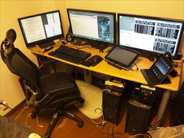 | サーバーというと仰々しく聞こえますが、←の様な設備はまったくもって必要ありません。 月数100円程度の格安レンタルサーバをレンタルすることで、どなたでも1時間程度の時間があれば設置ができます。 格安レンタルサーバーの中では、さくらインターネット、ロリポップ！、@PAGES、XREAなどが有名かつ、どどんとふ動作の報告が上がっています。 これらのレンタルサーバーと契約を行い、ウェブ領域を借りることで、どどんとふを設置する場所を持つことができます。 すでにご自分でサーバーが準備できている場合は、この項目は飛ばして「＜２＞どどんとふを準備する。」まで進んで下さい。 今回は、この中からさくらインターネットを選んで設置してみましょう。 どどんとふを設置する為に必要なサーバーの条件なども合わせて説明していきます。 使用するサーバーが決まっていない方もこのままおつきあいください。 |
| 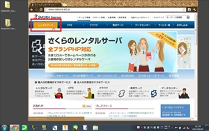 | さくらインターネットのTOPページです。 そのまんま[さくらインターネット]と検索するだけで簡単に見つけることができます。 今回はレンタルサーバーを借りることが目的なので、迷うことなくレンタルサーバーをクリックしましょう。 |
| 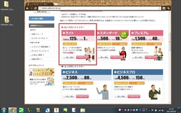 | レンタルサーバーのメニューです。 １番安いライトプランならば、月額１２５円でウェブ領域を持つことができます。 昔を知っている立場からしたら本当に安くなったものです。 |
| 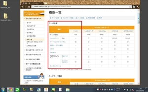 | 機能一覧から詳細も確認してみましょう。 容量１ＧＢ。 これは、主にテキストデータと画像データを使用するどどんとふには十分すぎる容量です。 ドメイン関連については、ユニークなホームページアドレスを持ちたい時にのみ必要になります。 後々の設定もできるので、今回は読み飛ばしておきます。 下にスクロールして続きを見ていきましょう。 |
| 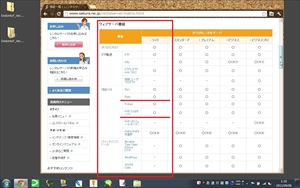 | どどんとふの動作には、最低限独自CGIのRubyが動く環境が必要です。 読み上げ機能を使う場合にはPHPも必要となります。 ライトプランの機能を確認してみると、独自CGIのRuby、CGIモードですがPHPが使えますね。 これで、さくらインターネットのライトプランは、どどんとふの動作条件を満たしている、ということが解りました。 他のレンタルサーバーを使われる方も、この２点、独自CGI(Ruby)とPHPが使えるかを確認して下さい。 |
| 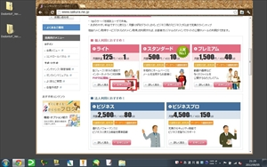 | 料金やその他の条件などをもう1度しっかりと確認し、納得ができたならば登録にすすみます。 |
| 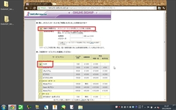 | はじめて利用する人は初めて利用するにチェックを入れて、プランにもチェックをいれます。 |
| 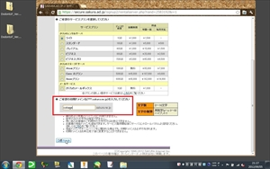 | 初期ドメイン名はそのままアドレスの一部となります。 後々後悔しないよう慎重に考えましょう。 ※ http://ドメイン名.sakura.ne.jp/ というアドレスになります。 |
| 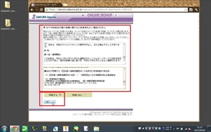 | 規約関連の条項の確認です。 しっかりと一通り目を通しておくことを推奨します。 あとあと読んでなかったではすまないですよ？ 同意ができる方はチェックして次へ進みましょう。 同意ができない方は他のサーバーを探してみると良いでしょう。 |
| 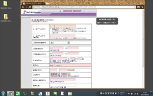 | お客様情報の登録ですね。 公開される情報ではありません。 やましいコンテンツを設置することが目的でもありません。 どうどうと本当の情報を記入しましょう。 虚偽情報で登録すると、最悪恐ろしいことになります。 |
| 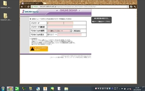 | パスワードとリマインダーを設定します。 この後に支払い情報の登録などがありますが、ここでは割愛します。 登録が終わるとメールが2通届きます。 サイト接続に必要な情報は2通目の[さくらのレンタルサーバ] 仮登録完了のお知らせに記載されています。 無事にこのメールが確認できれば仮登録完了です。 仮登録が終わった時点でサイト公開が可能です。 仮登録（試用期間）は2週間あるので、実際にどどんとふを設置し、問題がなければ正式に登録すると良いでしょう。 |
| 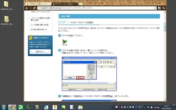 | ついでにサイトをアップロードするための準備を済ませておきましょう。 アップロードをするためにはFTPというツールが必要です。 FTPはフリーソフトでも多数ありますが、FFFTPがオススメです。 FFFTPの設定方法については、さくらインターネットに解説ページがあるので、そちらをご参照ください。 これでサーバーの準備は完了です。 「＜２＞どどんとふを準備する。」へと進みましょう。 |
| ＜２＞どどんとふを準備する。 | |
| 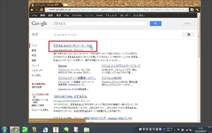 | まずは、どどんとふ＠えくすとり～む、通称ど＠えむへとスクリプトを入手しにいきましょう。 サイトは検索サイトで「どどんとふ」といれれば簡単に見つけることができます。 |
| 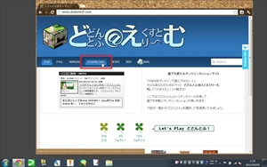 | ど＠えむの公式サイトです。 下部の通販リンクからお買い物をすることで、どどんとふ開発のためのカンパとなります。 では、スクリプトを探してみましょう。 そこはかとなく存在を主張しているDOWNLOADへと進みましょう。 |
| 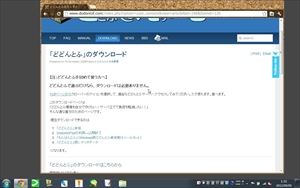 | ダウンロードページです。 下へとスクロールすると、、、。 |
| 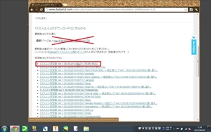 | ダウンロードするためのリンクがあります。 最新バージョンは新しい機能などが追加されていることがありますが、バグなどを含んでいる危険性が高くなります。 まずは安定版の設置を試してみることを強くオススメします。 今回はどどんとふ安定版 Ver.1.38.00(2012/07/21) 「救済の技法」をダウンロードしてみましょう。 |
| 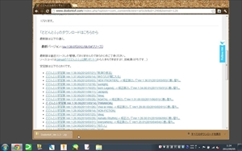 | ダウンロードの方法はブラウザに寄ります。 必ずパソコン内の忘れないところに保存しましょう。 |
| 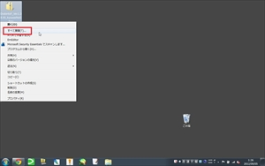 | デスクトップに保存してみました。 スクリプトはZIP型式で圧縮されています。 お使いの展開ソフトで展開しましょう。 WINDOWSにも付属の展開ソフトがあります。 ファイルを右クリックし、すべて展開を選択することで展開することができます。。 |
 |
展開先を選んでさっくりと展開しましょう。 |
| 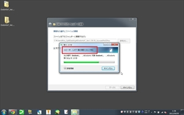 | 1400個以上のファイルがあります。 お使いのパソコンの設定や性能によっては10分程度の時間が掛かることがあります。 この間にお茶でも入れてリフレッシュしておきましょう。 |
| 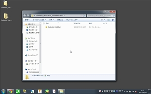 | 無事に展開が終わったようです。 早速DodontoF_WebSetフォルダを開いてみましょう。 public_htmlとsaveDataと２つのフォルダがあるはずです。 今回の設定で必要なファイルはpublic_htmlの中にあります。 public_htmlの中にはDodontoFとimageUploadSpaceの２つのフォルダがありますね。 このままさらにDodontoFフォルダを開きます。 |
| 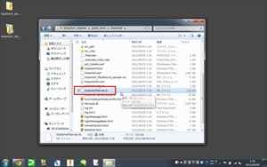 | 編集を必要とするファイルは２つだけです。 １つめが今開いているフォルダにあるDodontoFServer.rb もう１つが、src_rubyフォルダの中にある、config.rbとなります。 編集にはUNIX型式の改行コードに対応したテキストエディタが必要となります。 メモ帳やワードパットでは編集できないのでご注意下さい。 テキストエディタをお持ちでない方は、UnEditor(フリー）もしくはEmEditor(シェア）をオススメします。 |
| 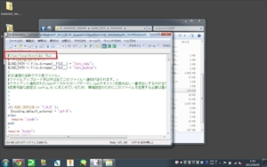 | では早速DodontoFServer.rbを編集してみましょう。 エディターからDodontoFServer.rbを開きましょう。 EmEditorならば、ファイルを右クリックしEmEditorで開くこともできます。 中身を見てみるとびっくり、5000行近くもあるじゃないですか。 こんな大きなファイルは編集できない、とあきらめないでください。 編集する場所は1カ所だけ、そこはどこかというと、、、 はい、画像をご覧の通り1行目です。 簡単でしょ？ では、どのように書き換えるかというと、、、。 Rubyへのパスを記載してください。 解らない人にはさっぱりですよね？ |
| 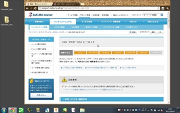 | 要するにRubyのパスを記載すれば良いのです。 あれ？ 要しても変わってない？？？ 気にせずに説明を続けます。 Rubyのパスはサーバーごとに設定値があります。 ほとんどのサーバーでは設定値はこの２つのどちらかになります。 /usr/local/bin/ruby /usr/bin/ruby こんな時にはサーバーの設置値を調べてみることにしましょう。 さくらインターネットのサイト内を散策してみたら、ほら、みつかりました。 このまま下の方へとスクロールしてみましょう。 |
| 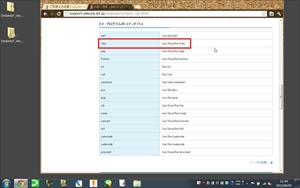 | 難しい記号が並んでいる中、 ruby /usr/local/bin/ruby これがRubyのパスです。 DodontoFServer.rbの１行目をこれに書き換えれば良いのです。 １つだけ注意点 先頭にある #! と、最後にある -Ku は絶対に変更し手はいけません。 この部分を変更せずに１行目のパスを置き換えると言うことになります。 では、さくらインターネットのパスは/usr/local/bin/ruby DodontoFServer.rbの１行目は#!/usr/local/bin/ruby -Ku #! はそのままにして、-Ku をそのままにして、その間のパスを書き換え、、、、 、、、、なくても、最初から同じ値でした。 さくらインターネットをご利用の場合には、DodontoFServer.rbは編集しなくても良いようです。 他のレンタルサーバーをご利用の方は、この説明を参照にパスの変更をして下さい。 |
| 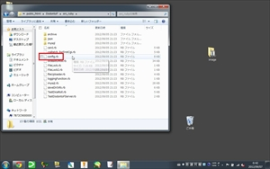 | もう１つのファイル、config.rbですが、、、 初級編では編集する必要はありません。 簡単でしょ？ これでどどんとふの準備が整いました。 「＜３＞どどんとふをアップロードする。」へと進みましょう。 |
| ＜３＞どどんとふをアップロードする。 | |
| 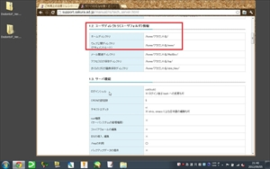 | まずはアップロードする場所を確認しましょう。 サーバーの主な仕様を見ると、アップロードする場所が見えてきます。 DodontoFフォルダとimageUploadSpaceはweb公開領域にアップロードします。 saveDataはweb公開領域よりも上位にアップロードします。 サーバーの主な仕様と対比してみましょう。 ホームディレクトリ /home/アカウント名/ ウェブ公開ディレクトリ（ドキュメントルート） /home/アカウント名/www/ つまり、DodontoFフォルダとimageUploadSpaceは/home/アカウント名/www/に、 saveDataは/home/アカウント名/にアップするのです。 解りやすいように図にして置きましょう。 home ｜ ＋www ｜ ｜ ｜ ＋DodontoF ｜ ｜ ｜ ＋imageUploadSpace ｜ ＋saveData アップロードする場所はレンタルサーバによって違いがあります。 さくらインターネット以外をご利用の方は、それぞれのレンタルサーバーの仕様をご確認ください。 |
| 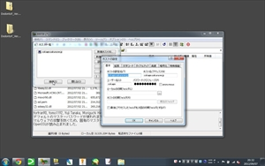 | それでは、FTPでサーバーにアップロードしましょう。 「＜１＞サーバーを準備する」でFTPの準備は終わってますね？ 早速、接続をクリックしてサーバーに接続しましょう。 |
| 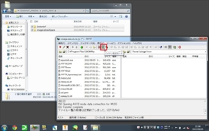 | バイナリ転送モードへと変更します。 このボタンをぽちっとクリックするだけです。 |
| 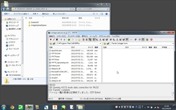 | DodontoFフォルダとimageUploadSpaceは/home/アカウント名/www/にアップロードします。 私のアカウント名はcokageなので、/home/cokage/www/になります。 アカウント名がtaitaiだった場合は、/home/taitai/www/となります。 適宜、ご自身のアカウント名に置き換えて判断してください。 アップロードする場所はレンタルサーバによって違いがあります。 さくらインターネット以外をご利用の方は、それぞれのレンタルサーバーの仕様をご確認ください。 |
| 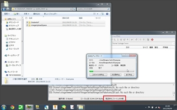 | アップロード中です。 ファイルの数が非常に多いので、アップロードも非常に時間が掛かります。 お使いの回線やサーバーにも寄りますが、１時間以上掛かることもあるので、この間にお風呂に入ることもできるでしょう。 |
| 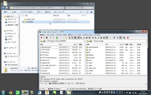 | 次いでsaveDataを/home/アカウント名/にアップロードします。 私のアカウント名はcokageなので、/home/cokage/になります。 アカウント名がtaitaiだった場合は、/home/taitai/となります。 適宜、ご自身のアカウント名に置き換えて判断してください。 アップロードする場所はレンタルサーバによって違いがあります。 さくらインターネット以外をご利用の方は、それぞれのレンタルサーバーの仕様をご確認ください。 こちらはすぐにアップロードが終わります。 |
| 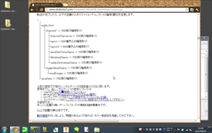 | 次に、ファイル・ディレクトリの権限（属性）を設定します。 CGI・PHP・SSI についてにて、設定の推奨値が示されていますので、これに従って設定してみましょう。 ファイルパーミッション 755 または 705 のいずれか ディレクトリパーミッション 755 または 705 のいずれか となってますね。 セキュリティは高いに越したことは無いので、両方とも705に設定しましょう。 権限（属性）はレンタルサーバーによって指定されている場合があります。 さくらインターネット以外をご利用の方は、それぞれのレンタルサーバーの仕様をご確認ください。 |
| 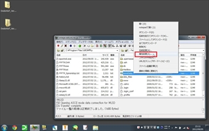 | では、順番に設定をしていきます。 まずはsaveDataを705に設定しましょう。 フォルダをクリックして選択し、右クリックすることでメニューが表示されます。 メニューから属性変更を選びクリックしてください。 |
| 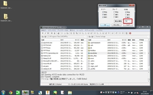 | 属性の変更ウィンドウが開きます。 現在の属性を705と書き換え、OKをクリックしてください。 これでsaveDataの属性の設定ができました。 |
| 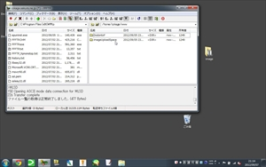 | では、他のディレクトリ、ファイルの権限も設定していきましょう。 実際にアップされているディレクトリ構成に従って図にしてみました。 この通りに設定してください。 なお、ここで指示されていないディレクトリ、ファイルの権限は変更しないでください。 アップロードする場所はレンタルサーバによって違いがあります。 権限（属性）はレンタルサーバーによって指定されている場合があります。 さくらインターネット以外をご利用の方は、それぞれのレンタルサーバーの仕様をご確認ください。 home ｜ ＋www ｜ ｜ ｜ ＋DodontoF -> 705 ｜ ｜ ｜ ｜ ｜ ＋DodontoFServer.rb -> 705 ｜ ｜ ｜ ｜ ｜ ＋log.txt -> 600 ｜ ｜ ｜ ｜ ｜ ＋log.txt.0 -> 600 ｜ ｜ ｜ ｜ ｜ ＋saveDataTempSpace -> 705 ｜ ｜ ｜ ｜ ｜ ＋fileUploadSpace -> 705 ｜ ｜ ｜ ｜ ｜ ＋replayDataUploadSpace -> 705 ｜ ｜ ｜ ＋imageUploadSpace -> 705 ｜ ｜ ｜ ＋smallImages -> 705 ｜ ＋saveData -> 705 これで権限の設定は完了です。 |
| 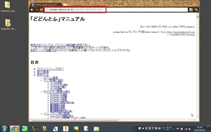 | 続いて動作確認を行います。 まずはファイルが適切にアップロードされているかを確かめましょう。 確かめるには実際にブラウザから接続してしまうことが１番簡単です。 アップロードしたファイルの中には、どどんとふのマニュアルであるREADME.htmlが含まれています。 今回はこのファイルが無事に開けるかどうか、で適切にアップロードができているのかを確認することにします。 ブラウザにでREADME.htmlのアドレスを入力してみましょう。 http://アカウント名.sakura.ne.jp/DodontoF/README.html アカウント名はご自身のアカウント名に置き換えて下さい。 私のアカウント名はcokageなので、http://cokage.sakura.ne.jp/DodontoF/README.ｈｔｍｌになります。 アカウント名がtaitaiだった場合は、http://taitai.sakura.ne.jp/DodontoF/README.htmlとなります。 さくらインターネット以外をご利用の方は、それぞれのウェブページアドレスをご確認ください。 図のように「どどんとふ」マニュアルというタイトルのページが表示されれば成功です。 ファイルは適切にアップロードされています。 |
| 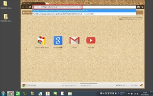 | 動作確認を続けます。 次は、アップロードしたDodontoFServer.rbへとアクセスして行います。 ブラウザにでDodontoFServer.rbのアドレスを入力してみましょう。 http://アカウント名.sakura.ne.jp/DodontoF/DodontoFServer.rb アカウント名はご自身のアカウント名に置き換えて下さい。 私のアカウント名はcokageなので、http://cokage.sakura.ne.jp/DodontoF/DodontoFServer.rbになります。 アカウント名がtaitaiだった場合は、http://taitai.sakura.ne.jp/DodontoF/DodontoFServer.rbとなります。 さくらインターネット以外をご利用の方は、それぞれのウェブページアドレスをご確認ください。 |
| 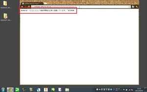 | 正しく設置されていれば、 #D@EM>#["「どどんとふ」の動作環境は正常に起動しています。"]#<D@EM# と表示されます。 表示されない場合は何らかの設定が間違っています。 ・ InternalServerErrと表示された場合はDodontoFServer.rbの権限が間違っていることが考えられます考えられます。 ・ 真っ白なページが表示された場合はDodontoFServer.rbの１行目が間違っていることが考えられます。 他の原因も考えられますが、１つだけ確実なのは、あなたの行った設定がどこかで間違っている、ということです。 もう１度「＜２＞どどんとふを準備する」から設定にまちがいがないか確認してください。 |
| 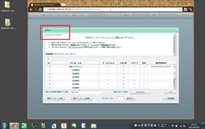 | 正常に動作していることが確認できたら、DodontoF.swfへとアクセスします。 http://アカウント名.sakura.ne.jp/DodontoF/DodontoF.swf アカウント名はご自身のアカウント名に置き換えて下さい。 私のアカウント名はcokageなので、http://cokage.sakura.ne.jp/DodontoF/DodontoF.swfになります。 アカウント名がtaitaiだった場合は、http://taitai.sakura.ne.jp/DodontoF/DodontoF.swfとなります。 さくらインターネット以外をご利用の方は、それぞれのウェブページアドレスをご確認ください。 ログイン画面が表示されれば大成功です。 このとき、 「どどんとふ」へようこそ TRPGオンラインセッションに必要な全てがココに という画面が表示されずに、ずっと ロード中… と表示されることがあります。 この場合は設定にミスがあります。 もう１度「＜２＞どどんとふを準備する」から設定にまちがいがないか確認してください。 |
| 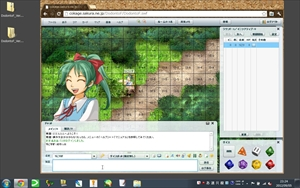 | 大成功だった方、おめでとうございます。 お試しプレイルームに入室し、適当に弄くり回してみましょう。 これも動作確認です。 チャットで発言したりマップを弄くり倒したり、、、適当にどんどん試してみましょう。 とことんいじくりまわしても問題がなければ、どどんとふの設置は完了です。 がんがんどどんとふを使って楽しみましょう。 君に、君たちに良きTRPGライフのあらんことを。 |
{kind=link}
{kind=link}
{kind=link}
{kind=link}
{kind=link}
{kind=link}
{kind=link}
{kind=link}
{kind=link}
{kind=link}
{kind=link}
{kind=link}
{kind=link}
{kind=link}
{kind=link}
{kind=link}
{kind=link}
{kind=link}
{kind=link}
{kind=link}
{kind=link}
{kind=link}
{kind=link}
{kind=link}
{kind=link}
{kind=link}
{kind=link}
{kind=link}
{kind=link}
{kind=link}
{kind=link}
{kind=link}
{kind=link}
{kind=link}
{kind=link}
{kind=link}
{kind=link}
{kind=link}
{kind=link}
{kind=link}
| 更新履歴 | ||
| 2010/09/27 | Var1.0.0 | 新規公開 |